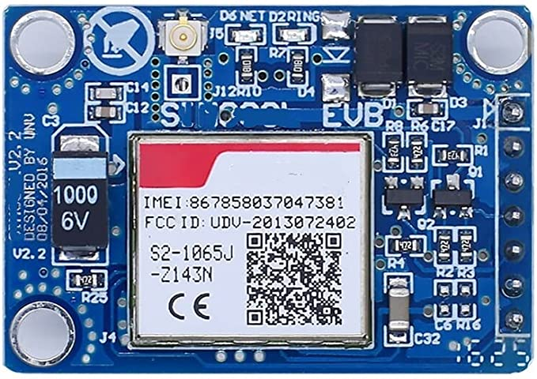
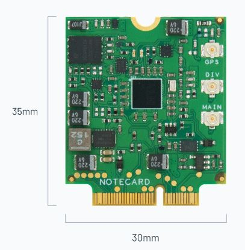
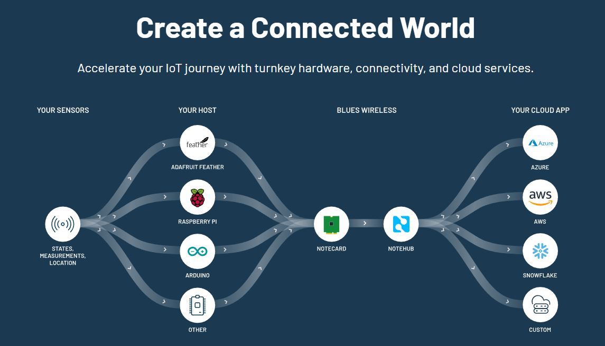

Les objets connectés¶
- Auteur
J.Soranzo
- Date
Novembre 2019
- Societe
VoRoBoTics
- Entity
VoLAB
Sous-articles:
Sommaire
Reprise du XMind : LesObjetsConnectes
Mes projets en lien avec ioT¶
Répertoire
iot
courrs et doc
031-iot
pas grand chose dedans
quel était le but ?
Projet de serveur iot au lab
C'est un peu la même chose que le projet 045
partie III
045-plateformRpi_IOT
PARTIE I
PARTIE II
mise en coffret
PARTIE III
serveur and co
PART IV
dédiée imp 3D
046-jardinIndoor
049-setDS3231_NTP
051-marieWifiSta
0044-Iot_ESP_PPlug
cerbere
embryons de projet
nodeJS
Event-driven I/O server-side JavaScript environment
Article Web intéressants¶
Le site superhouse.tv en anglais.
La vidéo youtube Device Cloud Hello World sur la chaine de Tony DiCola
Hardware¶
SIM800L¶
SIM800L : Testée avec une carte FREE prx au 1/1/23 : 14€
DollaTek V2.0 Module sans Fil GSM GPRS 5V Quad-Band W/Capot de câble d’antenne M105
{kind=link}
Carte Blues.io¶
{kind=link}
The Notecard s’utilise obligatoirement avec une carte support : 59$ + 15 à 25$
Détecté le 1/1/23 dans Cold Storage Monitoring System Based on Cellular& Wi-Fi Mesh sur Hackster.io
Pas de SIM physique, utilise une eSIM (mais il faut tout de même un abonnement compatible).
Le fournisseur Blues.io offre en plus un certain nombre de service:
{kind=link}